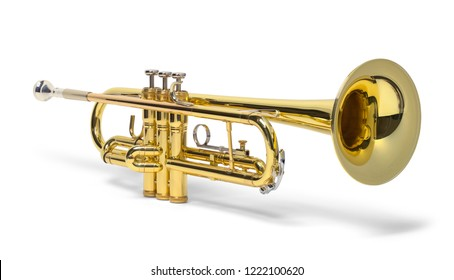
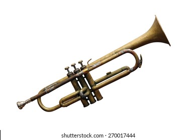

TRUMPET
Trumpet, French trompette, German Trompete, brass wind musical instrument sounded by lip vibration against a cup mouthpiece. Ethnologists and ethnomusicologists use the word trumpet for any lip-vibrated instrument, whether of horn, conch, reed, or wood, with a horn or gourd bell, as well as for the Western brass instrument. The technical distinction between trumpet and horn is that one-third of the tube length of a trumpet is conical and two-thirds is cylindrical, while the horn’s tube is the opposite. Both types are found throughout the world.
The metal trumpet dates from the 2nd millennium BCE in Egypt, when it was a small ritual or military instrument sounding only one or two notes. Used in various forms as a military and sometimes civilian signal instrument; it came into prominence as a musical instrument in the Middle Ages. Later forms included the natural trumpet of the 16th–18th centuries and, following the invention of valves about 1815, the modern valve trumpet. The valve trumpet, ordinarily built in B♭, maintains the traditional trumpet bore, cylindrical with a terminal bell flare, though usually the bore tapers toward the mouthpiece to provide additional flexibility of tone. The bend near the bell incorporates a tuning slide. The compass ranges from F♯ below the treble staff to well above the staff, depending on the player’s skill. The music is notated a major second higher than the actual sound.
Mouthpieces vary; orchestral players usually prefer a wider and deeper mouthpiece than dance-band and jazz players, who favour a narrower and shallower mouthpiece to produce a sustained forte in the high register. The tone quality may be changed by inserting a mute into the bell: either a conical straight mute of fibre or various aluminum mutes.